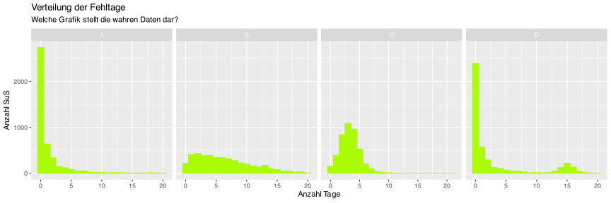
Beschreibung von Verteilungen
Samuel Merk
Inhalte dieses Vorlesungsblocks
Empirische Häufigkeitsverteilungen
Maße der zentralen Tendenz (Arithm. Mittel, Median, Modus)
Maße der Streuung (MAD, Var, SD)
Vielgipflichkeit (Modalität)
Schiefe (Skewness)
Einige grafische Darstellungen
Empirische Häufigkeitsverteilungen
Beispiel zum Einstieg
Keppens, Spruyt, & Dockx (2019) haben bei \(N=4344\) Schülerinnen und Schülern den unautorisierten Absentismus erfasst. Was denken Sie: Welche Abbildung stellt die Ergebnisse korrekt dar?
Beispiel zum Einstieg
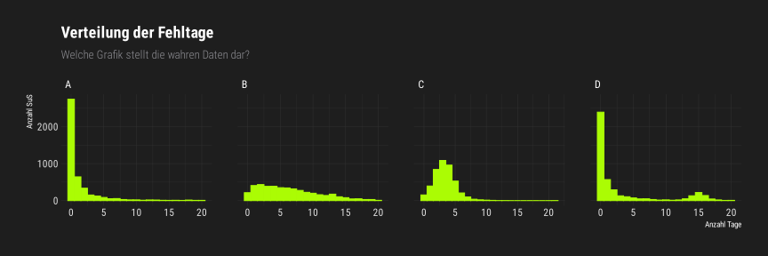
- zentrale Tendenz
- Vielgipflichkeit (Modalität)
- Streuung (Dispersion)
- Schiefe (Skewness)
Maße der zentralen Tendenz
Zentrale Tendenz
| Schüler*in | Fehltage | Selbsteinschätzung | Geschlecht |
|---|---|---|---|
| S1 | 13 | nie | m |
| S2 | 4 | selten | j |
| S3 | 14 | selten | m |
| S4 | 4 | oft | j |
| S5 | 10 | selten | j |
- Bei intervallskalierten Variablen kann die zentrale Tendenz als “Durchschnitt” (arithmetisches Mittel) angegeben werden (alle Datenpunkte aufsummieren und diese Summe durch die Anzahl der Datenpunkte teilen).
- Bei ordinalen Daten entspricht der Median der zentralen Tendenz. Man erhält ihn, indem man alle Datenpunkte der Größe nach ordnet und dann den Wert in der Mitte nimmt. Ist die Anzahl der Datenpunkte eine gerade Zahl, entspricht der Median dem arithm. Mittel der beiden mittleren Werte.
- Bei nominalen Daten kann man den Modus (Kategorie mit der häufigsten Ausprägung) als zentrale Tendenz auffassen.
Zentrale Tendenz: Definitionen
Wenn \(X = \{x_1, x_2, ..., x_n\}\) eine empirische Variable (= Datenreihe darstellt) sind das arithmetische Mittel \(\bar x\) und der Median \(\widetilde{x}\) wie folgt definiert: \[\bar{x}=\frac{1}{n} \sum_{i=1}^{n} x_{i}\]
\[\widetilde{x}= \begin{cases} x_{m+1} & \text{für ungerades }n = 2m + 1 \\ \frac{1}{2}(x_m + x_{m+1}) & \text{für gerades }n = 2m \\ \end{cases}\]
Aufgaben
Bearbeiten Sie mehrere Versionen der Aufgaben 3.1 - 3.4 unter ogy.de/mvl
Maße der Streuung
Mean Average Deviation
\[Fehltage = 13, 4, 14, 4, 10\]
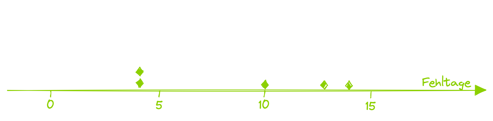
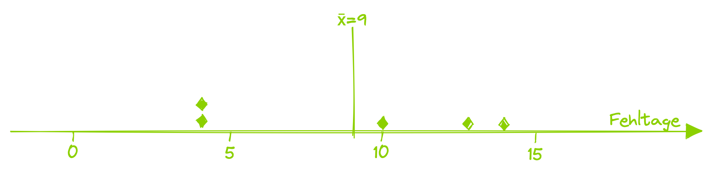
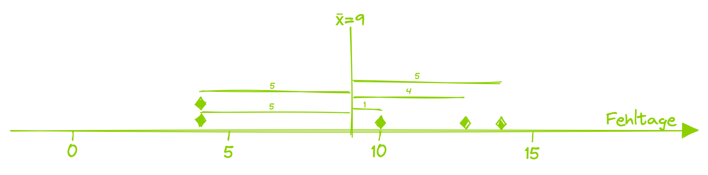
\[MeanAD(\text{Fehltage}) = \frac{4+5+5+5+1}{5} = 4\]
Varianz & Standardabweichung
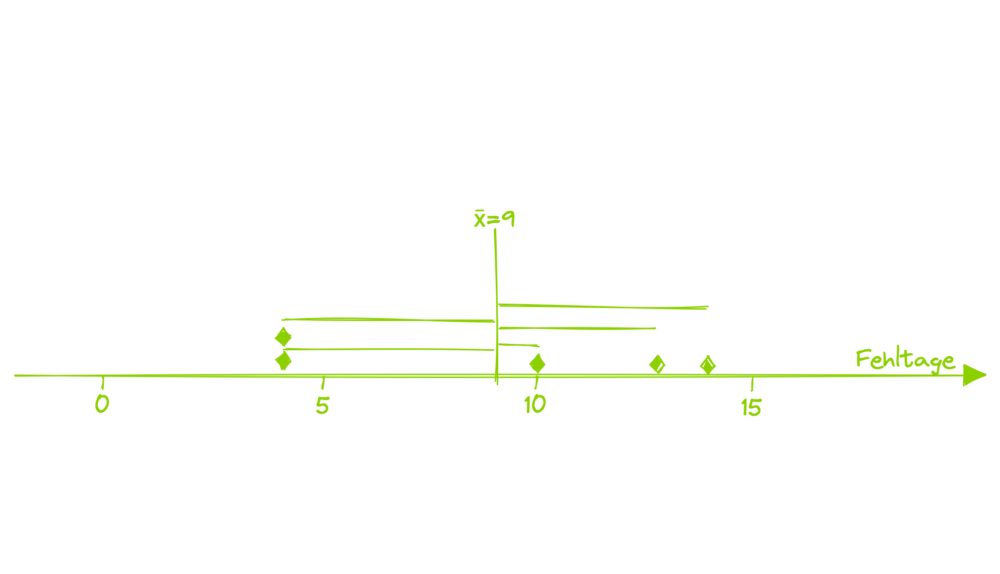
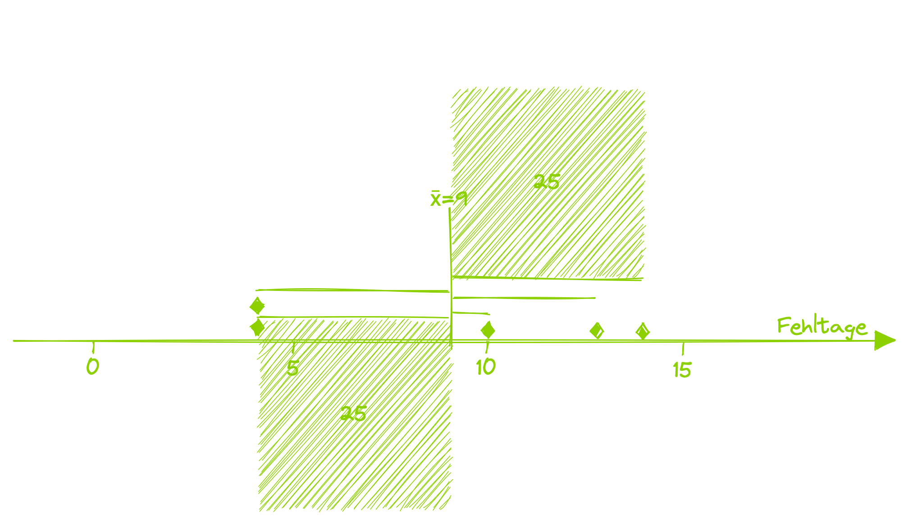
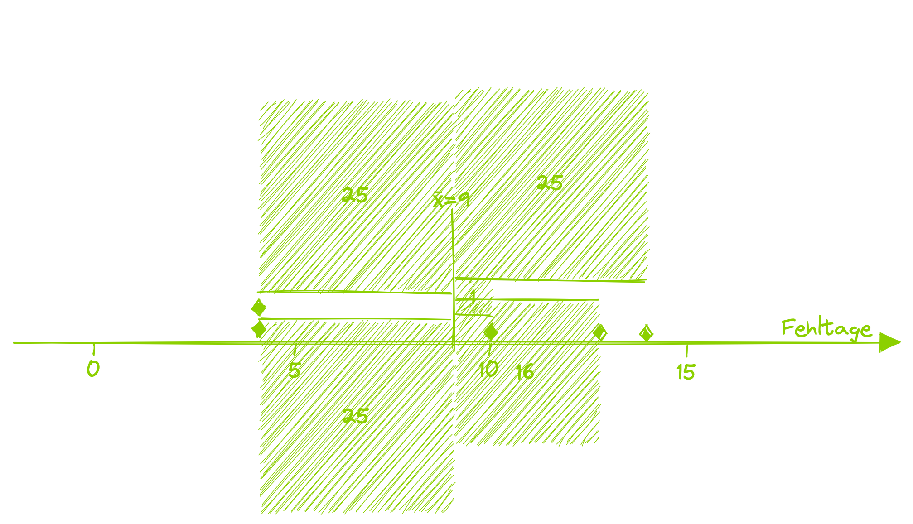
\[Varianz =s^2(\text{Fehltage}) = \frac{16+25+25+25+1}{4} = 23\] \[Standardabweichung = \sqrt{s^2} = \sqrt{23}\]
Streuungsmaße: Definitionen
Wenn \(X = \{x_1, x_2, ..., x_n\}\) eine intervallskalierte empirische Variable darstellt, sind die Mean Average Deviation \(MeanAD\), die Median Average Deviation \(MedianAD\), die Varianz \(s^2\), die Standardabweichung \(s\), die Quartile \(Q_1\), \(Q_2\), \(Q_3\), sowie der Interquartilsbereich \(IQR\) wie folgt definiert: \[Range = [min(x_i);\;max(x_i)]\] \[MeanAD = \frac{1}{n} \sum_{i=1}^{n} \left(|\overline{x} - x_i |\right) \;\;\;\; MedianAD = \frac{1}{n} \sum_{i=1}^{n} \left(|\widetilde{x} - x_i |\right)\] \[s^2 = \frac{1}{n-1} \sum_{i=1}^{n} \left(\overline{x} - x_i \right)^2 \;\;\;\; s = \sqrt{s^2} = \sqrt{ \frac{1}{n-1} \sum_{i=1}^{n} \left(\overline{x} - x_i \right)^2}\] \[\text{Quartil 1} = \text{Median aller } x_i ≤ \widetilde{x} \text{; } \text{Quartil 2} = \widetilde{x} \text{; } \text{Quartil 3} = \text{Median aller } x_i ≥ \widetilde{x} \text{; }\] \[IQR = \left[\text{Quartil 1}; \text{Quartil 3} \right] \]
Streuung ordinaler Variablen
Die Definitionen des Range, der Quartile und des IQR sind auch auf ordinale Variablen anwendbar, allerdings bei Variablen mit wenigen Ausprägungen nicht sehr informativ. In vielen Anwendungsfällen ist eine qualitative grafische Abschätzung sinnvoll.
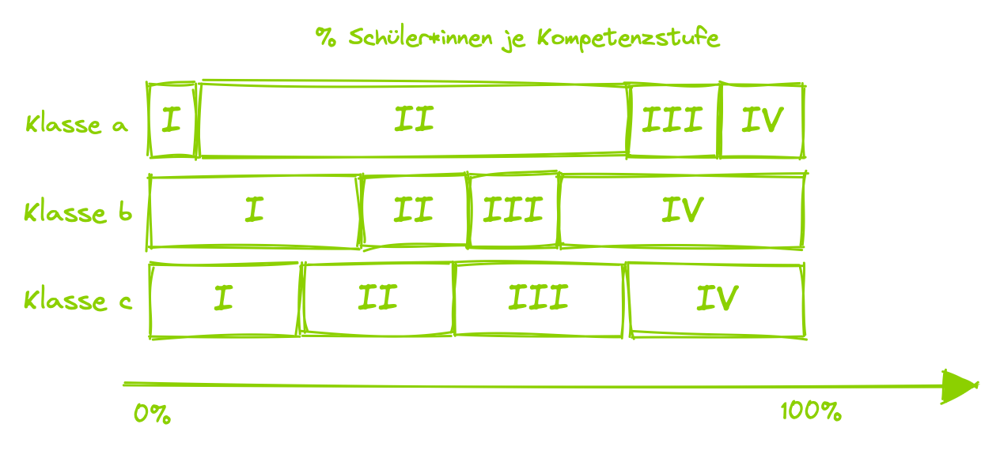
Aufgaben
Bearbeiten Sie mehrere Versionen der Aufgaben 3.5 - 3.7 unter ogy.de/mvl
Modalität
Modalität
Mit Modalität wird die »Vielgipflichkeit« einer Verteilung bezeichnet. Die Modi entsprechen oftmals in den Daten enthaltenen Subgruppen (Eid, Gollwitzer, & Schmitt, 2013).
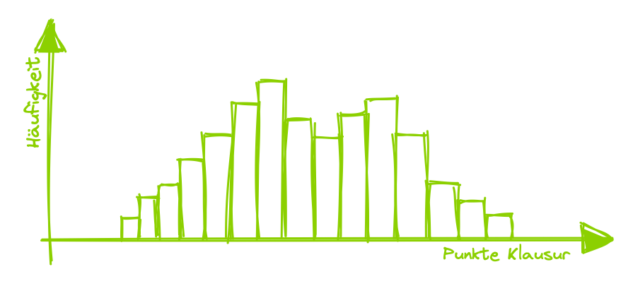
Schiefe
Schiefe
Die Verteilung einer (unimodalen) intervallskalierten Variable ist schief, wenn die Streuungen der oberen/unteren Hälfte unterschiedlich sind (von Hippel, 2005).
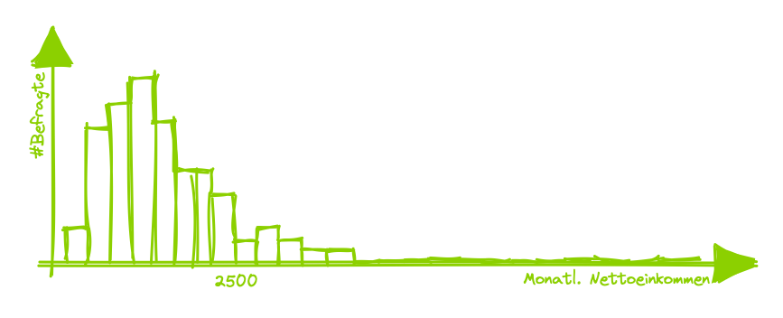
Einige grafische Darstellungen
Aufgaben
Bearbeiten Sie mehrere Versionen der Aufgaben 3.8 - 3.9 unter ogy.de/mvl
Einige grafische Darstellungen
Cheat Sheet - Plottypes
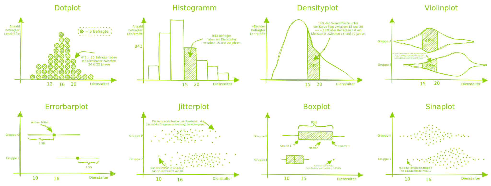
Aufgaben
Bearbeiten Sie mehrere Versionen der Aufgaben 3.10 - 3.12 unter ogy.de/mvl
Literatur
Eid, M., Gollwitzer, M., & Schmitt, M. (2013). Statistik und Forschungsmethoden: Lehrbuch. Mit Online-Materialien (Third). Beltz.
Keppens, G., Spruyt, B., & Dockx, J. (2019). Measuring school absenteeism: Administrative attendance data collected by schools differ from self-reports in systematic ways. Frontiers in Psychology, 10.
von Hippel, P. T. (2005). Mean, median, and skew: Correcting a textbook rule. Journal of Statistics Education, 13(2).